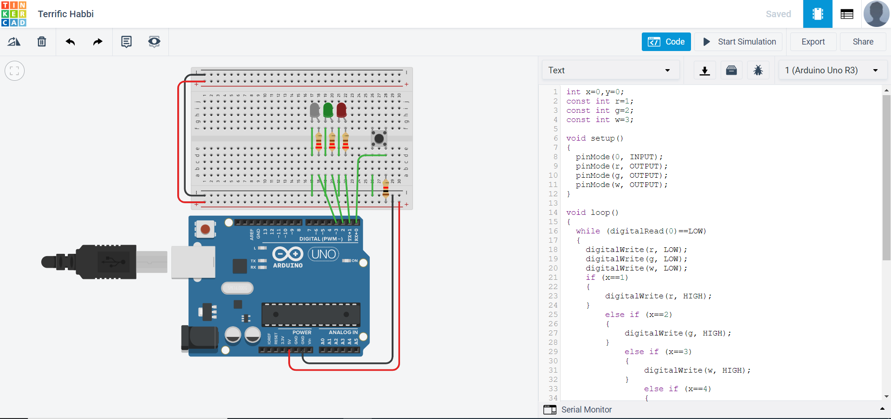

Introduction to Arduino
Arduino Programming
In programming we are bound to make a lot of errors. In fact based on personal experience, half the time you take or less to create your final programme is used to actually write out the codes, the other half is spent troubleshooting. There are 3 types of errors a programmer can make:
- Syntax Errors
- Errors that do not follow the pragramme language rules.(e.g. forgetting ;)
- Easily detected by the compiler and recommended actions are advised.
- Most common error type
- Logical Errors
- Errors made my coder(e.g not writing the formula based on programme structure)
- Compiler still runs but output values will not be what is expected.
- Hardest and most time consuming error to catch as multiple debugs has to be done to find a pattern that could indicate what is wrong. This is especially so when running larger codes.
- Semantic Errors
- Improper use of programme statements (e.g Using a loop with no end condition)
- Occurs frequently among new programmers due to lack of knowledge on how a function works but through frequent practice, occurence is rare.
Programming structure

In programming, a flow chart is typically recommended when trying to visualise how our code will work. Flow charts will usually require one or more of the following structures.
- Sequence
- Doing a task one at a time
- A task could be an instruction, a formula or even another structure.
- The order of execution is important in ensuring that the code will work.
- Condition
- If-else statements
- if a condition is met, it will execute a Task A, else execute Task B
- The order of execution is important in ensuring that the code will work.
- Repetition
- while/for loop
- while a certain condition is being met, execute task A.
- This will keep repeating until the checker variable has met the conditions, thus checker variable must have a way to update after each loop to avoid semantic error.
Documentation
Documentation is a good habit to pick up so that others or future you can come back and understand your programme. This way others can give feedback on how to improve the code rather than spend the better half of an afternoon figuring out what it is trying to do.
Variables
There are 2 types of variables, local and global.
Local variables are established within the function or the block itself and will have its own meaning and value within said block or function but cannot carry this out to other blocks or function.
Global variables are defined at the start of the code, outside of any blocks or functions. They can affect any and all blocks or functions that chooses to use it.
Assignment
Todays assignment was to make a circuit with one pushbutton that when pressed, turns on the RED LED, pressed again to turn on the GREEN LED but turn off the RED, pressed again to turn on the WHITE LED but turn off the GREEN, pressed again to turn on ALL the LED, pressed again to turn off ALL the LED